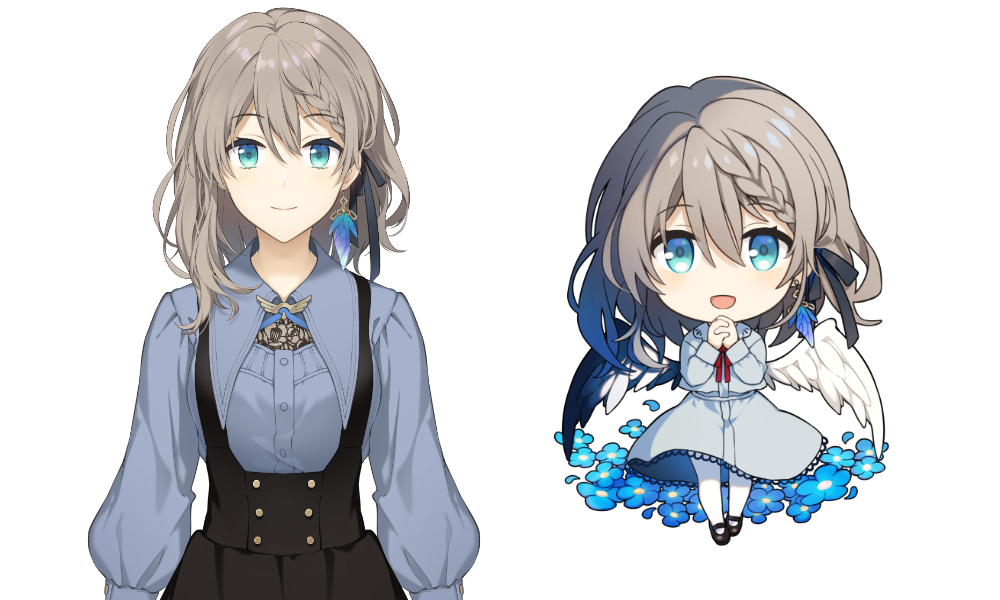

About me
結崎有理（Yuizaki Yuri）
8月25日生／女性／関西出身／しがない会社員
うさぎ、TRPG、ミステリ、ボードゲーム、料理がすきです。
同人声優、ボーカルのお手伝いをしつつ、Youtubeで配信活動（主にTRPG・マダミス）をしております。
リアル・バーチャル問わず楽しいことを求めて遊んでいます。
所謂Vtuberと自分で名乗ってはいないし、リアルにも出没するのですが、そんな認識でも大丈夫です。
また、作曲家のミナグさんと一緒にParfaitmelliaという音楽ユニットを組んでボーカルを担当しております。

結崎有理（概念）について
Live2D・立ち絵イラストレーター：きのひら鳴 様（
Twitter）
Live2Dモデリング：自作
3Dモデル制作：△〇□× 様（
Twitter）
【全身立ち絵（通常服）】
ハッシュタグ
配信/Live： #おしゃべりゆーり
ツイートやFanart：#結崎有理 #みてみてゆーり
※ハッシュタグでツイートされたFanartについては、配信でご紹介したりサムネイルとして使用させていただく場合がございます。
週次のラジオ配信
毎週月曜日、深夜（23～2時頃くらい）Youtubeで「ゆるりとないと」というラジオ配信をしています。
パーソナリティは私と、ゲーム実況者のALTOさんです。
く
ハッシュタグ： #ゆるりとーく
※ハッシュタグでツイートされたFanartについては、配信でご紹介したりサムネイルとして使用させていただく場合がございます。
各種リンク
Parfaitamellia オフィシャルサイト｜ボーカル担当している音楽ユニット
マシュマロ｜感想・質問・メッセージ
BOOTH｜グッズ・TRPGシナリオ販売
DLSite｜シチュエーションボイス販売
Ci-en｜クリエイター支援ブログ
二次創作ガイドライン
ファンアートを制作いただけることはとてもとても励みになります！いつもありがとうございます。
とてもふんわりとしておりますが、二次創作についてのお願いごとです。
お願い事項
・良識の範囲でお願いいたします
・個別に私へ許可を取る必要はございません。ご連絡頂いても返信は致しかねます
・私が配信などでご紹介したり、サムネイルなどで使用させて頂く可能性がございます
・本ガイドラインは、結崎有理およびその創作物（TRPG・マダミスシナリオ、ボイスドラマなど）にも適用されます
・関与する作品のネタバレになってしまうものはワンクッションツール（ふせったー、ポイピクなど）をご利用ください
OKなこと
・イラスト、小説、MMD、立体物、コスプレ、配信の切り抜き、楽曲のアレンジ、歌ってみた、などの二次創作
・趣味の範囲でのグッズ・同人誌などの制作および頒布（ただし非公式であることを必ず明記ください）
・イメージを損なわない範囲の衣装や髪型等のアレンジ
・skebなどで結崎有理のファンアートをどなたかにリクエストすること
NGなこと
・私および第三者を傷つけたり、人権を侵害するようなもの、法に触れるもの
・事業活動としてのグッズ・同人誌などの制作および頒布
・R-18+に該当するセンシティブなもの
・公式の素材、第三者のファンアートを利用したあらゆるもの
・私が配布した音源、およびCD音源を利用した楽曲の二次創作に関しては、販売・収益化を禁止します。自作音源によるものはOKです。
・TRPG、マーダーミステリー配信の切り抜き動画
TRPG・マーダーミステリーについて
PLメインでたまにKP・GMもやっています～。お気軽にお誘いいただけると嬉しいです。
ただ、卓修羅なのでお断りしてしまう場合もございます。ご容赦ください。
申し訳ございませんが相互フォロワーさん以外からのお誘い、GMのご依頼は現在お受けしておりません。
制作したシナリオ
ペアマーダーミステリー「名探偵は四人もいらない」
所持ルルブ
・クトゥルフ神話TRPG 基本6版、7版
サプリメント（2010、2015、2020、帝國、カルトナゥ、幻夢境、キパコン、マレモン）
・インセイン
・パラノイア リブ―テッド（GM/PL/ミッションブック）
・ダブルクロス3rd 1/2
・ソードワールド2.5 1/2
・平安幻想夜話 鵺鏡
通過済シナリオ（★は配信卓です）
クトゥルフ神話TRPG
Deep Deep Blue
★Es：ケープエスジャスミンの温室
Sandbox
あトの祀リ（HO1）
★あなた方は御曹司です、金にモノを言わせてイタリアまでオペラを聴きに来ました。
★或る探偵の回想録
★アンヴォイダブルツアー
★異説・狂人日記
★犬猫戦争は、終わらせない HO1
海も枯れるまで（HO1）
★エイブモズ
鬼の棲む
★おや、捨てKPCだ。かわいそうに…
傀逅
壊胎
★カタシロ
★カール・ハインリッヒに捧ぐ
★カリプソの島
★奇奇怪怪同好会 Chapter 01,02
希望の園
狂気山脈～邪神の山嶺～ HO3B
苦難の民は陰界に消ゆ
★胡蝶の夢は今宵も
★豪華客船と怪盗団
殺人鬼は曇天に遊ぶ
塩漬荘監禁事件
死中に生を求める
★灼熱さえあればいい
★白百合の殻 HO1
★沼男は誰だ？ HO2
★遭難者C EXSTREAM
ソープスクール HO3
デウス・エクス・マキナは死んだ HO2
★天国に行こう
★天曜日
天露尋
★とある家族の幸せな話 HO2
★同居人
★ドロップアウトディスパイア HO1
トロンプルイユの残影論
庭師は何を口遊む HO3
★ネームレス・カルト
★遥かなる夏へ
★火点し頃の蜘蛛踊り
★プルガトリウムの夜 HO1
★星の神話、エンドロール
みゆき
夕凪の調べ
★夕焼けの街
揺らぎの文末
嗤う人間師 HO3
うつつの陽炎、朧の姑獲鳥
彼方からの君に捧ぐ（視聴のみ）
まれびとこぞりて（視聴のみ）
エモクロアTRPG
★夢見草に吊る
★狂骨
インセイン
公衆電話
きさらぎ駅
★長崎婚礼狂想曲
★学校の怪談
★さらばかぜのこ
花街哀歌-Sweet-三たび紡がれる、初めての恋の物語（視聴のみ）
マーダーミステリー
jモリアーティの暗躍
★碧い涙に、はなむけを
★宇宙人狼～死人は語らない～
★円蓋の向日葵
★踊呂奇珠杖最期のステエジ
カワイソス銀貨
★狂気山脈～陰謀の分水嶺～
★草花の楽園
★後宮毒花〜この中に皇太后さまを殺した犯人がいるってホントですか！？〜
★ジョン・ドゥ氏の受難
★聖六花女学院殺人事件（GM）
★夕景
★血濡れの紫陽花
★鳥葬の怪談
★天使のエルと時計じかけの国
★南極地点X
★名探偵は四人もいらない（GM）
★幽刻館の殺人
★四人の令嬢と執事たち
少年少女Aの独白（視聴のみ）
2人の犯人（視聴のみ）
その他
ダブルクロス3rd
Absolute Cain
フタリソウサ
★山の死体
{kind=link}